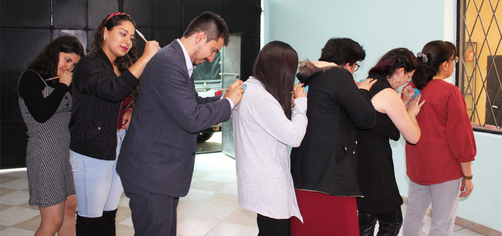
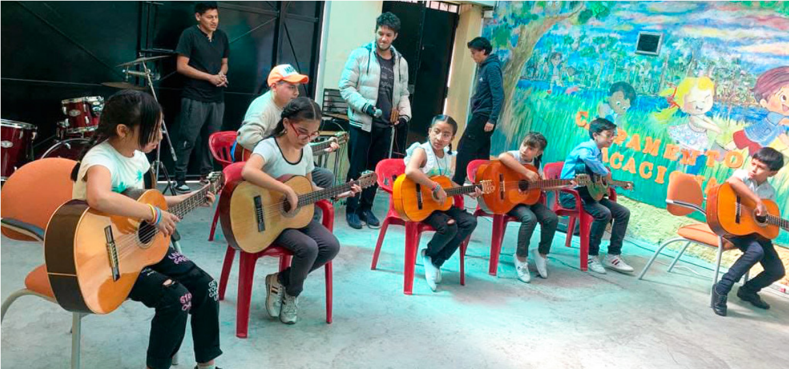

Calle Nicaragua y Guatemala N12-35. Sector San Juan Centro de Quito.
Servicios y Tratamientos
El Departamento Clínico del Centro de Desarrollo Psicoemocional "La Perfecta Alegría" ofrece una amplia gama de servicios especializados, abarcando desde la investigación hasta la rehabilitación, con un enfoque centrado en el bienestar humano. Nuestros tratamientos se fundamentan en diversas corrientes psicológicas, adaptándose a las necesidades individuales de cada cliente y priorizando su salud mental.
Ofrecemos sesiones tanto individuales como grupales, adaptadas a las preferencias y requerimientos de cada persona, ya sea en modalidad presencial en nuestras instalaciones o a través de plataformas virtuales. Nos comprometemos a crear un entorno seguro y compasivo que favorezca el crecimiento personal y emocional de nuestros clientes.
Objetivos
- Brindamos una atención psicológica con ética profesional, comprometida con el servicio y las necesidades de la población.
- Humanidad y Sensibilidad
- Desarrollar técnicas de trabajo creativas con el fin de innovar frente a los desafíos que se puedan presentar para solucionar problemáticas en relación a la salud mental.
- Acoger a las diversas necesidades de los pacientes, siendo sensibles y solidarios frente a las situaciones que estén atravesando, para que puedan llegar a tener una mejor calidad de vida.
- Brindar una atención psicopedagógica y empática a niños, niñas y adolescentes, para que sus necesidades educativas sean superadas durante los ciclos académicos.
Servicios Clinicos
El área clínica del Centro de Desarrollo Psicoemocional "La Perfecta Alegría" se encarga de la investigación, la evaluación, el diagnóstico, el tratamiento, el pronóstico y la rehabilitación de sus consultantes con un enfoque humano en las diferentes corrientes psicológicas. Trabajamos en atención individual o grupal, presencial o virtual.
- Valoración e Informe Psicológico.
- Psicoterapia Individual.
- Psicoterapia Conyugal (Parejas).
- Psicoterapia Familiar.
- Psicoterapia Infantil.
- Psicoterapia Grupal.
Servicios Educativos
Servicios psicopedagógicos enfocados en prevenir, atender y dar solución a diversas demandas, como las dificultades en el aprendizaje y el lenguaje, la estimulación temprana y la orientación vocacional. Estos servicios brindan apoyo a la comunidad educativa (familia, escuela, estudiante), así como a profesionales externos de otras ramas (neurólogo, neuropediatra, neuropsicólogo), con el fin de dar seguimiento al desarrollo del niño, niña o adolescente.
- Evaluación e Informe Psicopedagógico.
- Evaluación de Lenguaje.
- Evaluación Preescolar e Infantil.
- Evaluación de Orientación Vocacional / Profesional.
- Terapia Psicopedagógica, de Lenguaje y Estimulación Temprana.
Tratamientos Clinicos
- Adiccones
- Anorexia
- Ansiedad
- Autolesiones
- Bulimia y Obesidad
- Bullying
- Conductas agresivas
- Dependencia emocional
- Depresión
- Violencia de género
- Negligencia y abusos
- Identidad sexual
- Orientación Profesional
- Pánico
- Timidez
- Divorcio
- Duelos y pérdidas
- Estrés Postraumático
- Estrés
- Fobias
- Autoestima baja e inseguridad
- Enfermedades catastróficas
- Enfermedades psicosomáticas
- Regulación emocional
- Hiperactividad-Déficit Atención (TDA-H)
Tratamientos Educativos
- Asesoría profesional
- Adaptación de malla curricular
- Dificultades de estudio
- Dificultades del aprendizaje o Trastorno
- Específico del Aprendizaje (TEA)
- Dislexia
- Discalculia
- Disfemia (tartamudeo)
- Disortografía
- Dificultades en el lenguaje o Trastorno
- Específico del Lenguaje (TEL)
- Escuela para padres
- Programas de Psicoestimulación
- Técnicas de estudio